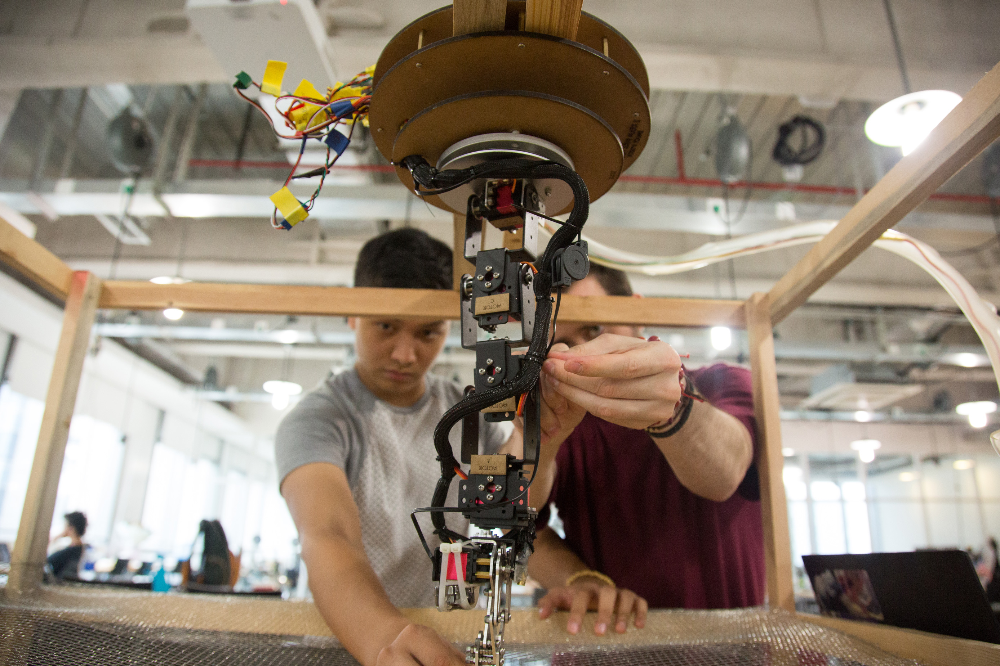
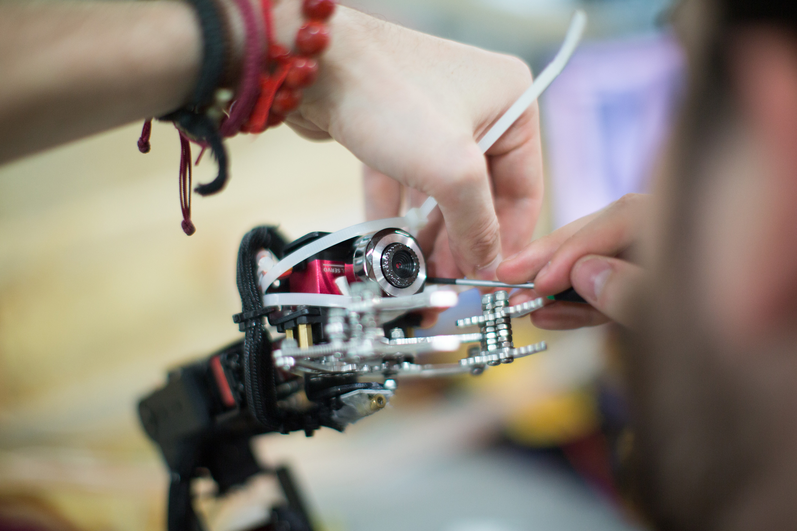
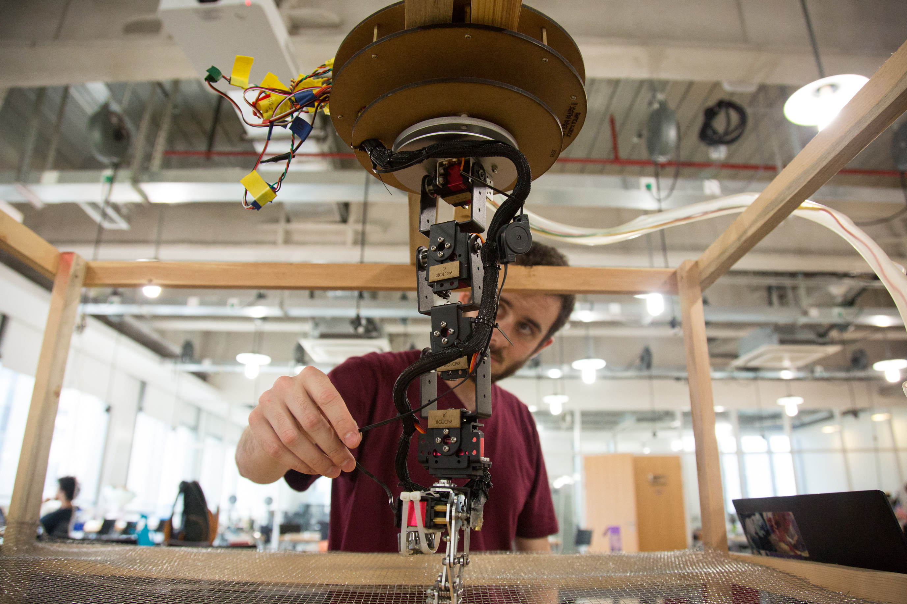
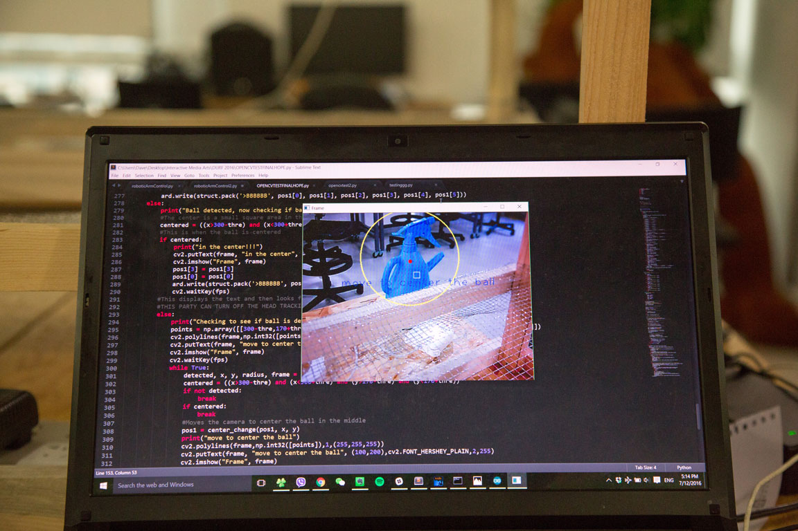

Seeing Assistive Robotic Arm
2016/Assistive Tech/Prototype The assistive robotic arm was an exploration into finding new ways for robotics to be used in assistive tech over the Summer of 2016. This is both a working prototype and a proof of concept, just a simple robotic arm with a webcam attached to it, using computer vision, an arduino, and head mouse to find and then grab certain objects. With this you can control and move the robotic arm with just the use of your head.
We originally wanted to use a high quality Logitech webcam, but then elected to go for a smaller, cheaper, and also lighter webcam that the robotic arm could handle.
The credit to the wooden chassis should all go to Nicholas, Sevi, and Jennifer. While I was working on the head control they were tirelessly assembling the chassis from wood bought from a small shop near the school. Really amazing job! Super steady and secure.

A bit of a peek into how the computer was processing the video feed. We drew a small crosshair type of overlay in order to visualize what areas of the feed were being detected. If the color it was looking for was not fully centered, the OpenCV python code would send instructions to the Arduino side of things to move and center accordingly.
